Objective:
Use sorting of attributes functionality to identify genes and pathways driving clustering of basal breast tumors.
Skills Covered
:
- Sign into the Tumor Map.
- Creating a new group from an existing categorical (multi-valued) attribute.
- Using set operations to combine existing groups.
- Running statistical test to order attributes based on their differential presence/absence in one group versus another.
Steps:
- Click *Sign In* on the menu bar at the far right and enter your authentication credentials.
- In the Tumor Map, make sure the mRNA layout is selected
- In the Short List, make sure Tissue is checked and no other attributes are checked
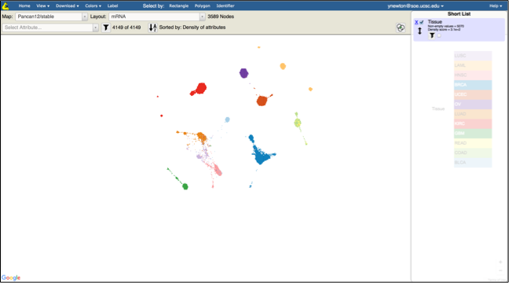
- Observe that breast tumors are in blue on the bottom right of the map
- In the Select Attribute type in “brca” and click on BRCA Subtype

- Observe the the breast tumors are colored by the molecular subtypes
- Uncheck Tissue attribute in the Short List
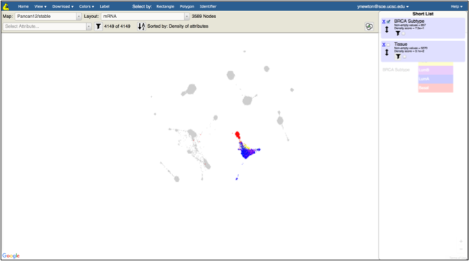
- Under the BRCA Subtype attribute click on the filter checkbox and select Basal in the drop down
- Click Save Filter next to the filter drop down
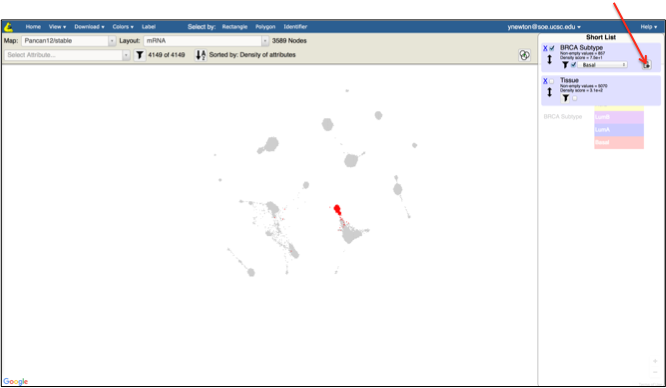
- Specify the name of the group (e.g. BasalBRCA) in the popup box
- Under the BRCA Subtype attribute click on the filter checkbox and select LumA in the drop down
- Click Save Filter next to the filter drop down
- Click on Data menu and click on Map Reflection
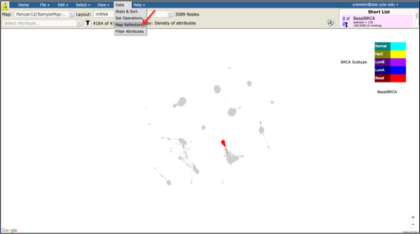
- In the Map Reflection popup window make sure BasalBRCA is selected as Selection and Map ID says Pancan12/GeneMap and click Reflect
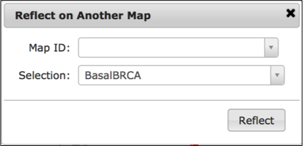
- The corresponding reflection (gene) map will open in a separate screen
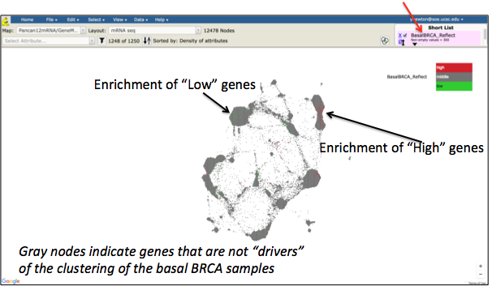
- Use the zoom in/out control on the bottom right of the screen and the mouse control to zoom into the regions enriched in “High” genes and position that region in the middle of your screen. Examine these regions by eye
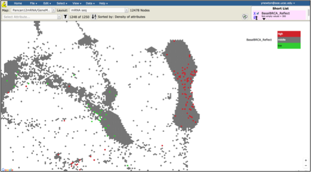
- Repeat the same steps as above to examine the regions enriched in “Low” genes
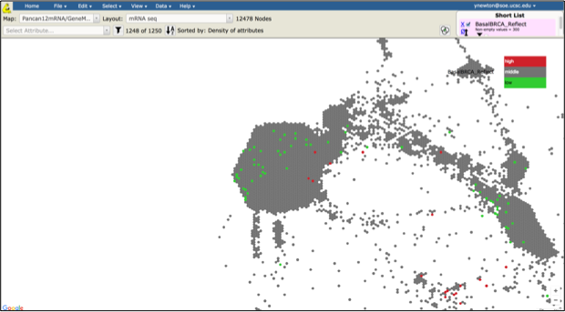
- In the Short List click on the filter check box below BasalBRCA_Reflect attribute and make sure “high” is selected. Click on the Save Filter button
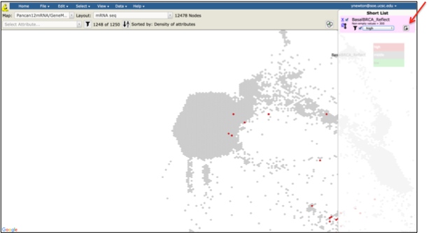
- Provide the name for this attribute (e.g. BasalBRCA_high)
- In the Short List uncheck the filter below BasalBRCA_Reflect and the checkbox next to BasalBRCA_Reflect attribute. Zoom out of the map to observe all the genes highlighted as being high in Basal BRCA clustering
Note: these are the same genes as were colored red in step 14.
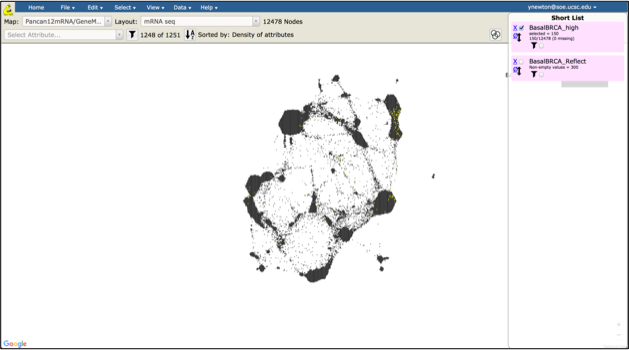
- Click on File menu, select Download and click on Node IDs
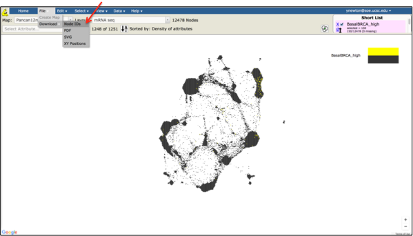
- In the export pop up screen make sure BasalBRCA_high is selected and click on Download As Text. Use your browser’s download functionality to save this list as a file to your local directory
Note: you are now able to do additional downstream analysis with this gene set (e.g. gene set enrichment analysis, subnetwork visualization, etc.)